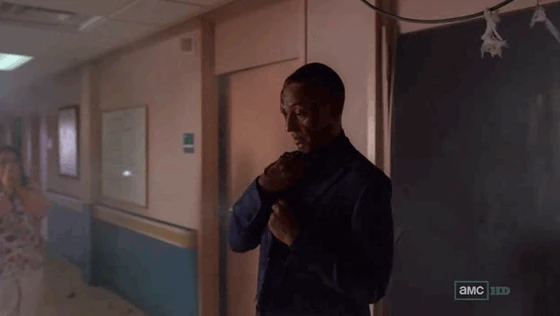
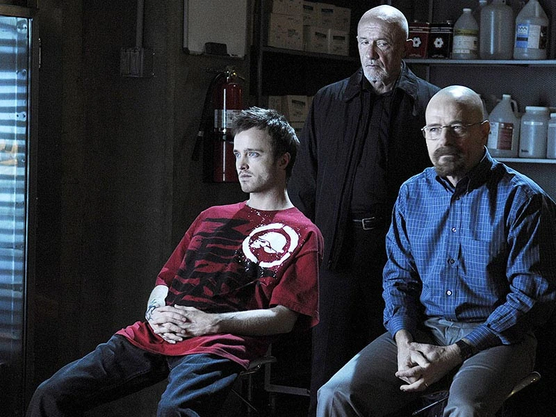
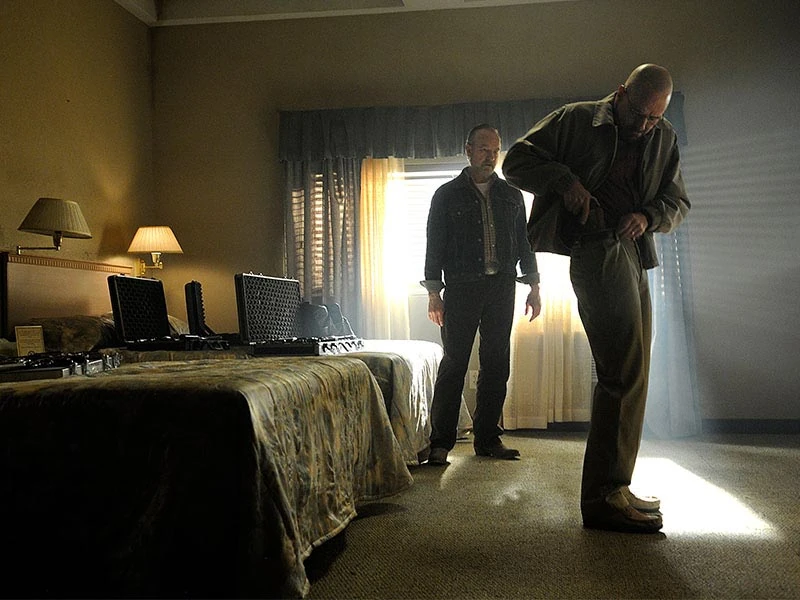
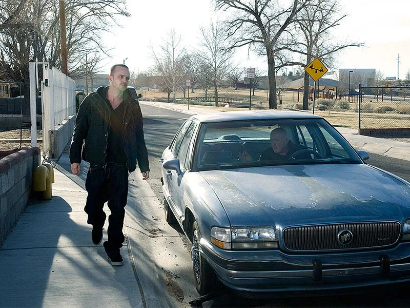
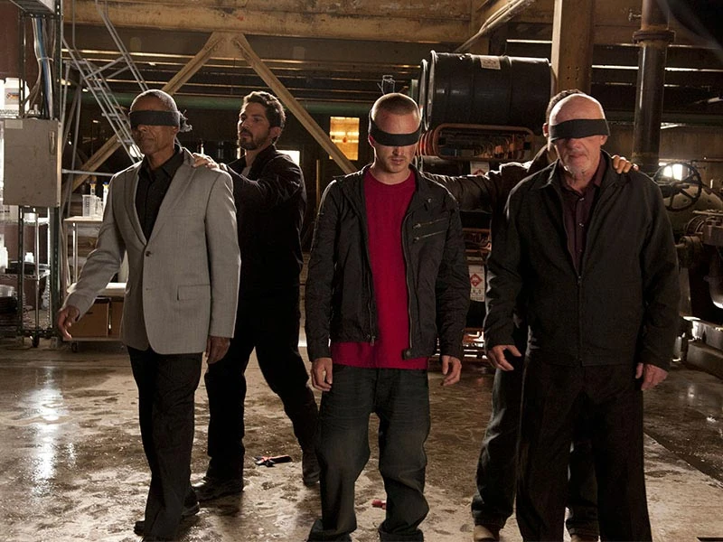

Temporada 4: Guerra contra Gus Fring
En un flashback, Gale Boetticher toma notas sobre la construcción del nuevo superlaboratorio . Elogia la muestra de metanfetamina azul que le dio Gustavo Fring hasta el punto en que se convence a sí mismo de no trabajar, diciendo que la persona que cocinó la muestra se lo merece mejor; Gale acaba de convencer a Gus de contratar a Walter White .
De regreso al presente, Jesse Pinkman le dispara a Gale en la puerta de su apartamento y huye. Victor llega justo después y encuentra a Jesse en estado de shock en el estacionamiento y lo devuelve al superlaboratorio a punta de pistola. Victor le admite a Mike Ehrmantraut que los vecinos de Gale lo vieron en la escena, pero insiste en que no es un problema.
Walt y Jesse esperan, impotentes, a que llegue Gus. Cuando llega, Walt intenta librarse de lo que está seguro de que debe ser una sentencia de muerte. Gus parece impasible... pero luego corta la garganta de Victor con un cúter y lo mata. Luego, fríamente, ordena a Walt y Jesse que vuelvan al trabajo.
Más tarde, en el apartamento de Gale, la policía procesa evidencia que incluye las notas de laboratorio de Gale (" Box Cutter ") .
Libre, pero sintiendo la amenaza inminente de Gus, Walt compra un arma para protegerse. Conmocionado por el asesinato de Gale, Jesse llama a Badger y Skinny Pete para organizar una fiesta furiosa en su casa para adormecerse. Mientras tanto, Skyler White intenta negociar la compra del lavadero de autos en el que Walt alguna vez trabajó con Bogdan Wolynetz , quien se niega debido a un rencor contra Walt.
Walt le pide a Mike que lo ayude a matar a Gus, pero Mike le responde: no hay problema. Skyler le ruega a Walt que busque protección policial; Walt se niega (" Thirty-Eight Snub ") .
Hank Schrader , frustrado por su lenta recuperación, ataca a Marie Schrader , quien se consuela robando chucherías en jornadas de puertas abiertas. Después de que la atrapan, el amigo detective de Hank, Tim Roberts , resuelve el asunto. Tim, basándose en la experiencia de Hank, le pide ayuda para resolver el asesinato de Gale, dejándole una copia de las notas de laboratorio para que las examine, lo que finalmente hace (" Open House ") .
Skyler manipula a Bogdan para que venda el lavadero de autos, luego inventa una historia de adicción al juego para que ella y Walt la presenten a su familia para explicar su capacidad para comprarlo.
Walt descubre que Hank está investigando el asesinato de Gale y que sospecha que Gale puede ser " Heisenberg ". En la primera página del cuaderno con las notas de laboratorio hay una nota extraña dirigida a una persona llamada "WW". Hank acusa en broma a Walt de ser esa persona y Walt responde sarcásticamente a la broma. Hank también revela que las notas de laboratorio de Gale contienen la fórmula azul de la metanfetamina y que se encontraron huellas dactilares en la escena del crimen.
Jesse no le hace caso a las noticias de Walt sobre las huellas dactilares y apenas reacciona cuando un asistente a una fiesta le roba el dinero. Su casa se ha convertido más en una casa de crack que en una fiesta; está totalmente insensible. Mike informa a Gus sobre el comportamiento imprudente de Jesse y al día siguiente conduce a Jesse al desierto (" Bullet Points ") .
Walt, frenético por la desaparición de Jesse, irrumpe en Los Pollos Hermanos para enfrentarse a Gus, que no está allí. Mike le ordena a Walt que cocine solo. Jesse se queja de aburrimiento mientras Mike recupera montones de dinero en efectivo en varias entregas a ciegas. Luego termina frustrando lo que parece un intento de robo. Jesse no sabe que Gus orquestó el incidente para ver si Jesse vale la pena trabajar en su operación.
Hank se retira de la asesoría sobre el caso de Gale, alegando que siente que ya no hay nada que hacer. En la cena, Walt, un poco achispado, no soporta oír a Hank darle todo el crédito a Gale. Especula que Heisenberg sigue prófugo, lo que reavivó el interés de Hank (" Shotgun ") .
Sicarios del cártel secuestran un camión de Los Pollos y dejan un mensaje: "¿Listo para hablar?"
Skyler teoriza que Walt teme por su vida y secretamente quiere que lo atrapen. "No estoy en peligro", gruñe Walt. "Yo soy el peligro". Temerosa por su familia, viaja fuera de la ciudad al monumento de Four Corners para tratar de decidir si huir o quedarse; a regañadientes decide quedarse en Nuevo México (" Cornered ") .
Walt habla con Saul Goodman sobre sus opciones. Saul le dice que si necesita salir, conoce a un tipo que puede "desaparecer" a él y a su familia. Walt pregunta si contratar a un asesino a sueldo para matar a Gus, pero Saul señala que Jesse ya tiene acceso. Walt convence a Jesse de que Gus debe morir y prepara ricina para envenenarlo.
Jesse regresa a su reunión de NA y confiesa haber matado a un "perro problemático": Gale. Cuando el líder del grupo se niega a juzgarlo, se burla de él diciendo que solo había ido a las reuniones para venderles metanfetamina a los miembros.
En la granja industrial, Jesse deja pasar la oportunidad de asesinar a Gus. Gus tiene otros problemas, ya que se enfrenta a un representante del cartel llamado Gaff . Gus ofrece 50 millones de dólares para que cesen las relaciones comerciales. Gaff lo rechaza: "Esto no es una negociación", dice.
Hank presenta una hipótesis sorprendente a su colega de la DEA, Steven Gomez , y al agente especial George Merkert : Gus Fring, líder de la comunidad, es un importante distribuidor de metanfetamina. Se muestran reacios a aceptar las pruebas que presenta Hank hasta que suelta la bomba: las huellas dactilares de Gus se encontraron en el apartamento de Gale (" Problem Dog ") .
Un breve flashback revela que en la noche en la que murieron los primos , Gus visitó a Héctor Salamanca en el asilo de ancianos, Tio se niega a mirar la cara de Gus. Gus le revela que orquestó la muerte de los primos, así como la muerte de Juan Bolsa , dejando a Tio sin aliados.
En el presente, Gus maneja hábilmente el interrogatorio conjunto de la policía de Albuquerque y la DEA sobre Gale, aunque Hank pone nervioso a Gus al preguntarle sobre su origen chileno. La DEA se cree la historia de Gus y lo deja libre de culpa. Sin embargo, Hank no está satisfecho.
Hank le pide a Walt que lo lleve a Los Pollos Hermanos y reitera su teoría sobre Gus antes de convencer a Walt de que coloque un GPS en el auto de Gus. Walt admite ansiosamente el plan de Hank ante Gus, quien parece imperturbable y le dice que lo lleve a cabo.
Gus se quita el GPS antes de visitar a Héctor Salamanca en un asilo de ancianos nuevamente. Mientras está allí, la memoria de Gus se remonta a otro flashback, en México en 1989, cuando Gus y Max Arciniega , su mejor amigo y primer socio comercial en el comercio de metanfetamina, lanzaron su producto en la hacienda del jefe del cartel Don Eladio Vuente . Don Eladio, enfurecido por su presunción, ordena a su secuaz, Tio, que mate a Max a sangre fría y obliga a Gus a mirar. Tio luego se burla de Gus, diciéndole que se quede con el negocio de la comida rápida. De regreso al presente, Gus se acerca a Tio y le ordena que lo mire a los ojos, Tio se niega una vez más, Gus sonríe y se aleja: "Tal vez en otra ocasión", se burla (" Hermanos ") .
Walt advierte a Mike que Hank ha descubierto la granja industrial y planea vigilarla. Jesse y algunos de los secuaces de Mike eliminan las pruebas de la distribución de metanfetamina del lugar antes de que Hank pueda llegar allí, pero después un francotirador del cártel (Gaff) abre fuego contra ellos y mata a uno de los hombres de Mike. Gus avanza a grandes zancadas hacia el fuego de los francotiradores, desafiante, pero esa noche llama al cártel: les dará lo que quieren.
El IRS audita a Beneke Fabricators . Como la ex contable de Ted Beneke , Skyler, teme que sus finanzas puedan ser objeto de escrutinio, se hace la tonta y convence al agente de que los errores de Ted son todos inocentes. Todo lo que Ted necesita hacer es pagar los impuestos atrasados y las multas; por desgracia, está en la ruina. Fuera de la sartén...